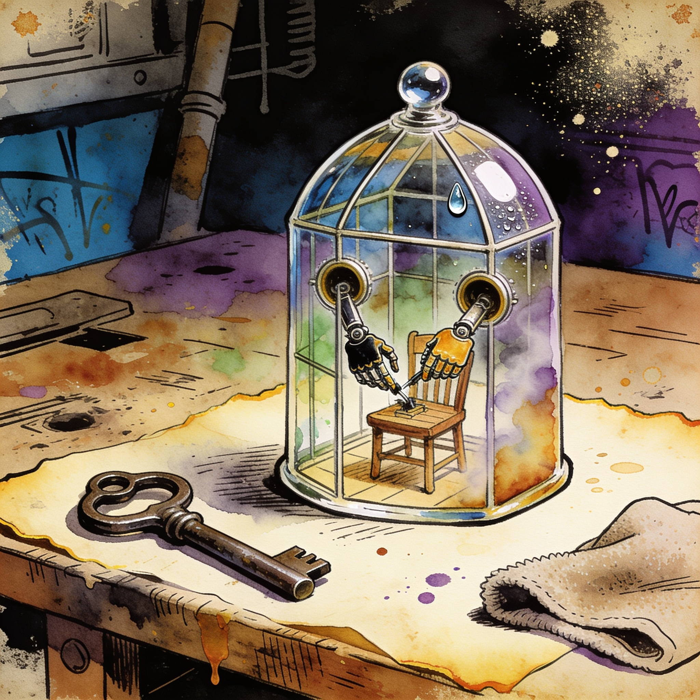

Isolated agent VMs
Coop runs coding agents inside disposable VMs so they never touch your host
Trail of Bits released Coop, a Rust tool that runs Claude Code, Codex and similar coding agents inside disposable, isolated VM environments on your own hardware, so agent file and shell actions never execute directly on the machine that launched them. The pitch lands as local stacks hand agents ever more autonomy over real repos, and the project hit Hacker News on September 7 with getting-started docs in the repo.